РАЗРАБОТКА КОНФИГУРАЦИИ ДЛЯ УЧЕТА ТОВАРОВ.
САМАЯ ПРОСТАЯ ЗАДАЧА
Сложность: **
Теги: справочник, документ, регистр накопления, обработка проведения, запрос, схема компоновки данных
ЗАДАНИЕ
Заказчик просит разработать конфигурацию для учета товаров.
Многоскладской учет не ведется. Суммовой учет не ведется. Взаиморасчеты с покупателями и поставщиками не ведутся.
В системе необходимо регистрировать закупку товара. При поступлении товара пользователь в табличной части указывает, какие товары и в каком количестве поступили. Нужно предусмотреть учет до граммов.
В системе следует регистрировать продажу товара. При продаже товаров указывается, какие товары были проданы и в каком количестве.
Продать товар «в минус» нельзя, в момент продажи необходимо проверять остаток товара.
Нужно построить «Отчет» по остаткам товаров.
Форма отчета:
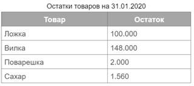
Отчет строится на конец дня, указанного пользователем. Особое внимание следует уделить последней секунде дня: документы, записанные на эту секунду, должны попадать в отчет.
Подготовка
q Создать новую информационную базу.
q Открыть информационную базу в режиме «Конфигуратор».
q Открыть окно конфигурации.
Подробнее о том, как это сделать, смотрите в Лабораторной работе № 2 (стр. 17).
Выполнение
«Многоскладской учет не ведется. Суммовой учет не ведется. Взаиморасчеты с покупателями и поставщиками не ведутся».
Из данной части условия можно сделать вывод, что никакой информации о складах, сумме, валютах, покупателях и поставщиках в информационной системе хранить не нужно.
«Заказчик просит разработать конфигурацию для учета товаров».
Становится понятно, что в базе нужно хранить список товаров. Для этой задачи нам потребуется создать новый справочник.
Определение
Справочник – это объект конфигурации, который хранит справочную информацию, например, перечень товаров или список сотрудников (более подробно про справочники можно прочитать здесь: https://v8.1c.ru/platforma/spravochniki/).
Добавим новый справочник «Товары».
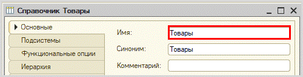
«В системе следует регистрировать поступление товара».
Для регистрации поступления товара в платформе «1С:Предприятие 8» существует специальный объект, который называется документ.
Определение
Документ – это объект конфигурации, хранящий информацию о каких-либо событиях, произошедших в «жизни» предприятия. Например, с помощью документа можно зарегистрировать (то есть сохранить данные документа для последующей обработки) продажу товаров или начисление зарплаты (подробнее про документы можно прочитать здесь: https://v8.1c.ru/platforma/dokumenty/).
Создайте документ «ЗакупкаТоваров».
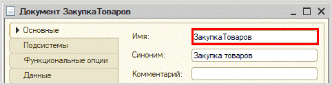
Для настройки структуры документа переходим на вкладку «Данные».
«При поступлении товара пользователь в табличной части указывает, какие товары и в каком количестве поступили. Нужно предусмотреть учет до граммов».
Добавим табличную часть «СписокТоваров».
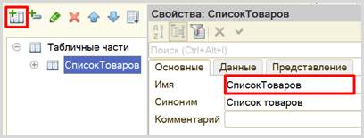
Далее добавим два реквизита табличной части (колонки таблицы): «Товар» (тип – СправочникСсылка.Товары) и «Количество» (тип – «Число»).
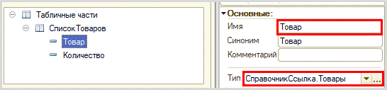
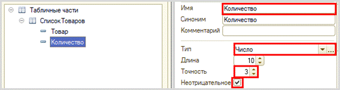
«В системе следует регистрировать продажу товара. При продаже товаров указывается, какие товары были проданы и в каком количестве».
Продажа товара осуществляется аналогично закупке, следовательно, документ по структуре будет точно таким же, как документ «ЗакупкаТовара».
Чтобы не тратить время на создание точно такого же документа, воспользуемся возможностью платформы создать новый документ копированием.
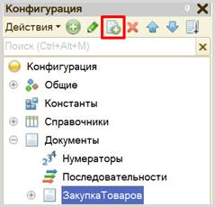
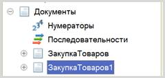
Получаем точную копию документа. Изменим имя документа на «ПродажаТоваров».
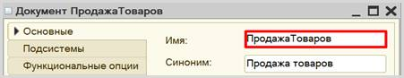
На вкладке «Данные» структура должна быть аналогична структуре документа «ПолучениеТовара»: иметь табличную часть с реквизитами «Товар» и «Количество».
Можно ли теперь на основе таких документов построить отчет по остаткам товаров? Можно, но для этого придется прибегнуть к грубому перебору всех существующих документов. Данный вариант является неправильным, потому что, если таких документов окажется очень много, система будет требовать большого количества ресурсов и времени.
Для решения данной проблемы и
ускорения процесса извлечения данных создадим еще один объект – регистр накопления.
Определение
Регистр накопления – это такая итоговая таблица, которая может автоматически считать какие-либо элементы, например, денежные средства, материалы (дополнительно про регистры накопления можно прочитать здесь: https://v8.1c.ru/platforma/registr-nakopleniya/).
Создайте регистр накопления «ОстаткиТоваров» вида «Остатки».
Вид регистра «Остатки» позволяет настроить данный регистр таким образом, что какие-то объекты будут вносить в него данные, а какие-то, наоборот, вычитать. Таким образом и получается хранение остатков.
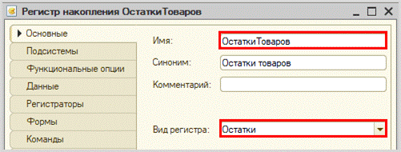
Для формирования структуры регистра переходим на вкладку «Данные».
Структура регистра накопления отличается от структуры документа.
Заполнение данного окна проще всего начинать с добавления ресурса. Чтобы понять, что использовать в качестве ресурса, нужно задать вопрос: «Что мы хотим накапливать/считать в данном регистре?». Мы хотим считать количество. Следовательно, количество и будет являться ресурсом. Тип данного реквизита – «Число».
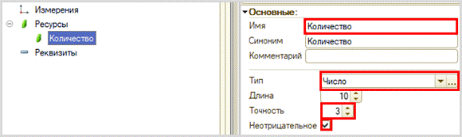
Чтобы разобраться с измерением, необходимо понять, в разрезе чего мы хотим считать количество. Мы хотим считать количество (чего?) товаров. Значит, в качестве измерения следует добавить реквизиты «Товар» (тип – «СправочникСсылка.Товары»).
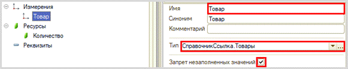
Чтобы регистр накопления заработал, нужно сделать следующее:
1. Определить источники данных, которые должны попадать в регистр (определить документы-регистраторы).
2. Описать, каким образом данные из документа-регистратора должны попадать в регистр.
Укажем документы, из которых будут формироваться движения в созданный регистр накопления. Для этого перейдем на вкладку «Регистраторы» и отметим галочкой созданные нами документы.
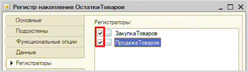
Далее для каждого документа-регистратора требуется сформировать движения в созданный регистр накопления.
Откройте окно редактирования объекта «ЗакупкаТоваров» на вкладке «Движения». Убедитесь, что галочка у регистра активна и воспользуйтесь конструктором движений.
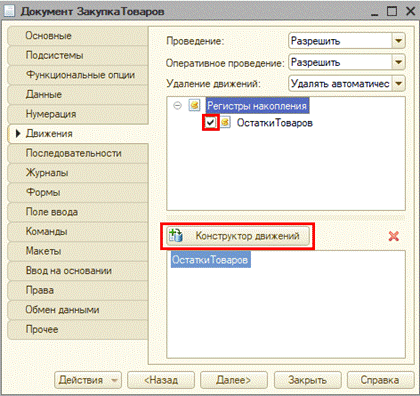
Окно конструктора движений состоит из нескольких областей:
q Левая верхняя область позволяет переключаться между регистрами (один документ может делать движения сразу в несколько разных регистров).
q Правая верхняя область описывает реквизиты документа-регистратора. Чтобы отобразить в данной области реквизиты табличной части, нужно выбрать ее в соответствующем поле.
q В нижней части окна описаны реквизиты регистра накопления. Нужно заполнить поле «Выражение» реквизитами документа.
Поскольку закупка товара должна увеличивать количество товаров на складе, то тип движения регистра необходимо выбрать «Приход». Регистр будет обозначаться знаком «+» (плюс).
Если все было сделано правильно, имена и типы реквизитов совпадают, то при нажатии на кнопку «Заполнить выражения» реквизиты регистра заполнятся автоматически. Если этого не произошло, то заполните поле «Выражение» вручную, путем выбора соответствующих реквизитов документа.
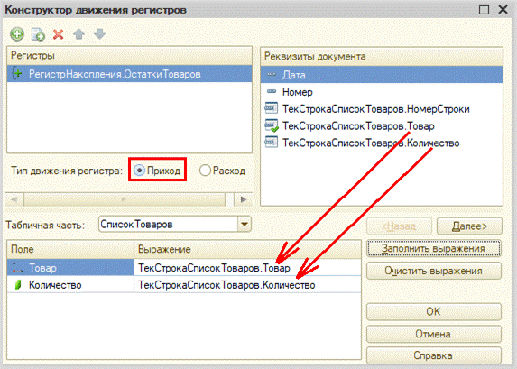
При нажатии на кнопку «ОК» система сформирует программный код, который при успешном проведении документа произведет движения в регистр накопления, то есть скопирует данные из документа в регистр накопления.
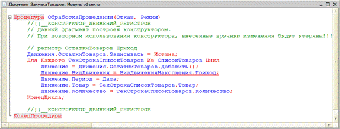
По аналогии сформируйте движения для второго документа «ПродажаТоваров», изменив вид движения на «Расход».
В результате в модуле объекта документа «ПродажаТоваров» вы получите аналогичный программный код, который отличается только видом движения.
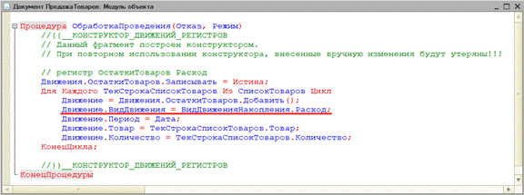
Для визуализации работы регистра накопления нужно создать отчет.
Определение
Отчет – это такой объект конфигурации, который формирует данные в понятном для пользователя виде, например, в виде таблицы или диаграммы (подробнее про отчеты можно прочитать здесь: https://v8.1c.ru/platforma/otchet/).
Создадим новый отчет «ОстаткиТоваров». Для наполнения отчета воспользуемся конструктором схемы компоновки данных.
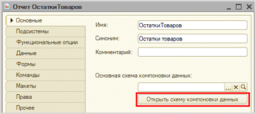
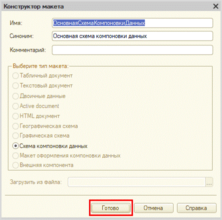
Все созданные нами объекты конфигурации представляют собой таблицы базы данных. В режиме «1С:Предприятие» мы заполняем эти таблицы данными. Чтобы получить эти данные для отображения в отчете, нужно сформировать запрос к базе данных.
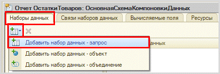
При построении запросов используется собственный язык запросов 1С. Их можно писать вручную или воспользоваться конструктором запросов.
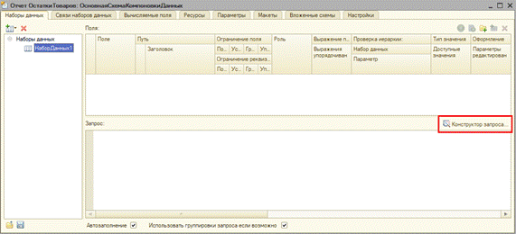
Открывается конструктор запроса. Эта вкладка имеет три части:
q Часть слева отображает все объекты конфигурации, имеющиеся в нашей базе данных. Нужно выбрать лишь те объекты, из которых мы хотим получать данные.
q Посередине находятся таблицы – это выбранные нами объекты, откуда мы хотим получать данные для конкретного отчета.
q Справа поля – это те значения (поля), которые мы хотим увидеть в отчете.
Данные будем брать не из регистра накопления напрямую, а из виртуальной таблицы, которую создает этот регистр автоматически. Данная виртуальная таблица позволит получить уже просуммированные значения по всем документам.
Чтобы перенести данные из одного окна в другое, просто перетащите
нужные поля с помощью мыши либо воспользуйтесь стрелочками, расположенными
между окнами.
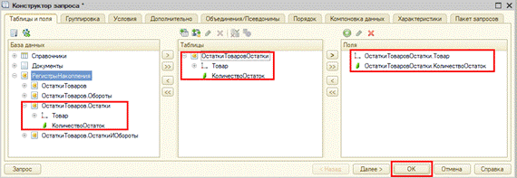
По завершении работы с конструктором нажмите на кнопку «ОК». Система сформирует следующий запрос:
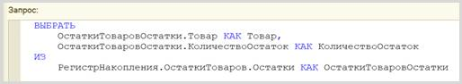
Измените заголовок у поля «КоличествоОстаток» на «Количество».
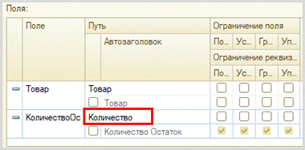
«Отчет строится на конец дня, указанного пользователем. Особое внимание следует уделить последней секунде дня: документы, записанные на эту секунду, должны попадать в отчет».
Из условия следует, что отчет должен включать документы, записанные на последнюю секунду дня. При использовании стандартных методов такие документы в отчет попадать не будут. Поэтому нужно добавить новый параметр «ДатаОтчета» на соответствующей вкладке.
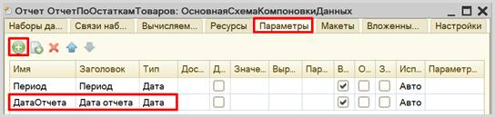
Чтобы у пользователя была возможность выбирать только даты, без указания секунд, нужно настроить формат редактирования параметра «ДатаОтчета».

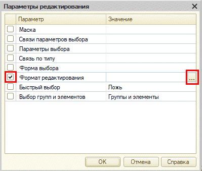

После нажатия кнопки «ОК» нужно настроить стандартный параметр «Период» для корректного учета последней секунды дня:
q во-первых, этот параметр должен быть недоступен пользователю, так как носит вычислительный характер;
q во-вторых, для корректного расчета требуется написать выражение для стандартного параметра «Период»:
ДОБАВИТЬКДАТЕ(КОНЕЦПЕРИОДА(&ДатаОтчета, "ДЕНЬ"),"СЕКУНДА",1)
Сначала берется последний момент дня, указанного в параметре «ДатаОтчета», а затем прибавляется еще одна секунда, чтобы учитывались даже документы, проведенные за эту последнюю секунду.
Последняя подзадача, связанная с отчетом, – настроить его внешний вид. Переходим на вкладку «Настройки» и воспользуемся конструктором настроек отчета.
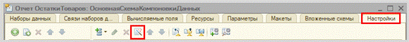
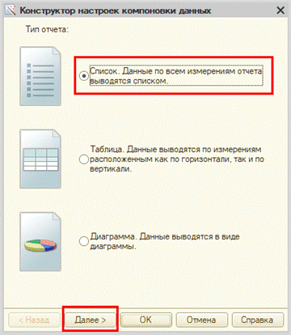
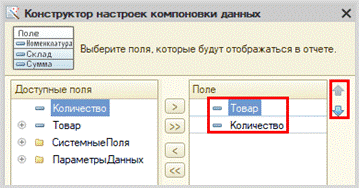
После выбора нужных полей нажмите на кнопку «ОК».
Чтобы у
пользователя была возможность выбирать требуемый день, вам нужно включить
параметр «ДатаОтчета» в пользовательские настройки. Это можно сделать в нижней
части вкладки «Настройки».
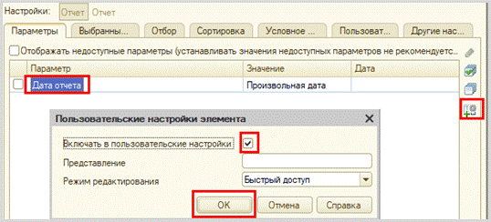
Проверьте работоспособность системы, заполнив тестовыми данными справочник, документы «ЗакупкаТоваров» и «ПродажаТоваров», а также построив отчет.
Чтобы в дальнейшем убедиться в корректности вывода информации о документах, проведенных в конце дня, создавайте документы за предыдущие числа. Это необходимо, поскольку созданные вами документы имеют оперативный режим проведения.
Для наглядности постройте отчет до проведения документа «ПродажаТоваров» и после.
|
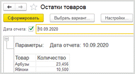 |
|
Если в документе «Продажа товаров» указать количество больше, чем имеется на складе, то будут получены отрицательные остатки.
Контроль отрицательных остатков является заключительным и самым важным этапом выполнения данной работы.
Проверять остатки товаров будем следующим образом:
1. Сделаем движение данных из документа в регистр накопления.
2. Проверим, появились ли в регистре остатки, значение которых меньше нуля (то есть отрицательные).
3. Если есть отрицательные остатки, то отменим сделанное движение в регистр накопления и выведем пользователю сообщение об ошибке.
Контроль отрицательных остатков должен происходить в момент проведения документа «ПродажаТоваров». Откроем модуль объекта данного документа.
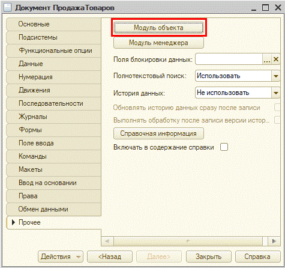
Чтобы сделать движение данных из документа в регистр накопления, допишем после окончания цикла строку «Движения.Записать();». Метод записывает только те движения документа, у которых установлен флаг «Записывать», при этом флаг в итоге снимается, что не приводит к повторной записи движений по окончании транзакции проведения.
И главное, «Движения.Записать();» всегда записывают движения в том порядке, в котором таблицы указаны в дереве метаданных, что на порядок уменьшает шансы взаимных блокировок, ведь все транзакции в одинаковом порядке блокируют таблицы.
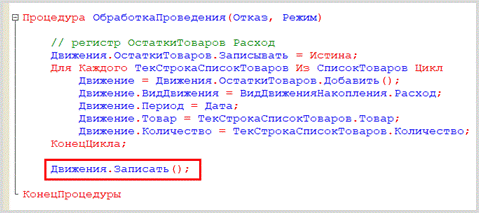
Теперь, когда движение было сделано, можно обратиться к данным регистра накопления.
Чтобы это сделать, воспользуемся конструктором запроса с обработкой результата. Этот конструктор можно открыть из контекстного меню, открывающегося щелчком правой кнопки мыши по области модуля. Данный конструктор обязательно должен быть вызван внутри процедуры «ОбработкаПроведения».
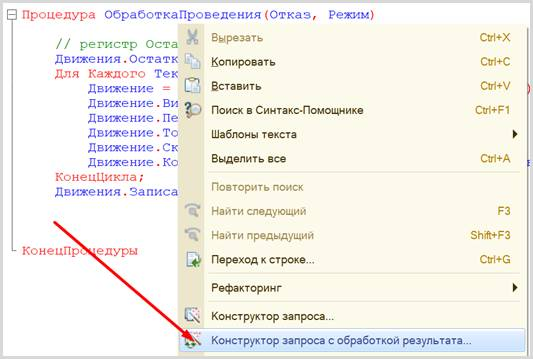
Соглашаемся с созданием нового запроса. Открывается окно конструктора запроса с обработкой результата. Переходим на вкладку «Таблицы и поля».

Открывшееся окно имеет три части:
q Часть слева отображает все объекты конфигурации, имеющиеся в нашей базе данных. Нужно выбрать лишь те объекты, из которых мы хотим получать данные.
q Посередине находятся таблицы – это выбранные нами объекты, откуда мы хотим получать данные для конкретного запроса.
q Справа поля – это те значения (поля), которые мы хотим получить.
Данные будем брать не из регистра накопления напрямую, а из виртуальной таблицы, которую создает этот регистр автоматически. Данная виртуальная таблица способна обработать основную таблицу и самостоятельно посчитать остатки товаров.
Чтобы перенести данные из одного окна в другое, просто перетащите
нужные поля с помощью мыши либо воспользуйтесь стрелочками, расположенными
между окнами.
В результате данное окно должно быть заполнено следующим образом:
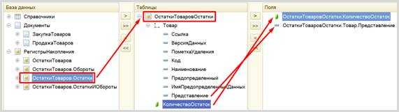
Переходим на вкладку «Условие» и добавим новое условие. Пусть в запрос попадут только данные с отрицательными остатками.
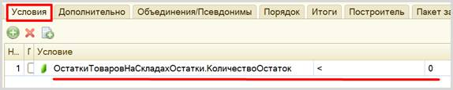
По окончании работы с данным конструктором нажимаем на кнопку «ОК». Конструктор выдаст предупреждение об ошибке, которое нужно проигнорировать. Для корректной работы запроса следует удалить знак амперсанта (&) перед нулем в условии. Запрос должен выглядеть следующим образом:
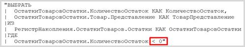
С помощью данного запроса из базы данных можно получить отрицательные остатки по всем товарам. Но нам нет необходимости получать такую большую выборку, нужно сузить запрос до перечня товаров, перечисленных в табличной части.
Откроем конструктор запроса. Для этого следует щелкнуть в любом месте самого запроса (черный текст в двойных кавычках) правой кнопкой мыши и вызвать конструктор запроса.
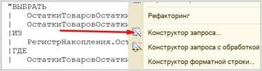
Далее нужно наложить условия на виртуальную таблицу регистра накопления.
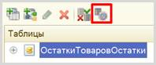
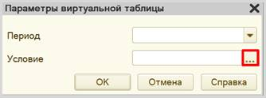
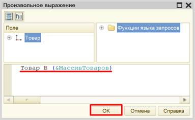
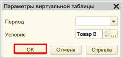
Данное условие поможет ограничить запрос по тем товарам, которые находятся в табличной части документа.
Нажимаем на кнопку «ОК». Текст запроса изменился:
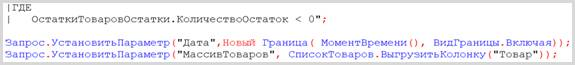
Мы добавили параметры. Теперь запрос будет проводить поиск только по конкретному списку товаров. Осталось лишь указать эти товары сразу после текста запроса. Так же необходимо добавить параметр «Дата».
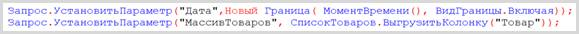
Ну, и последний шаг – выдать сообщение пользователю, если запрос вернул отрицательные остатки. В первую очередь, добавим блок условия:

Внутрь цикла можно попасть только в том случае, если запрос пришел не пустой, то есть если были найдены отрицательные остатки. В таком случае нужно отменить проведение документа и выдать пользователю сообщение:
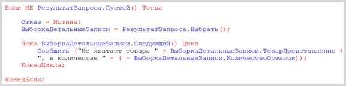
Код процедуры полностью должен выглядеть следующим образом:
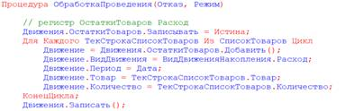
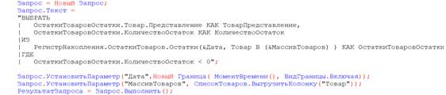
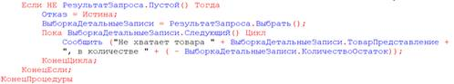
Теперь проверьте
корректность работы системы на предмет наличия ошибок при попытке продать
товара больше, чем его имеется в наличии.
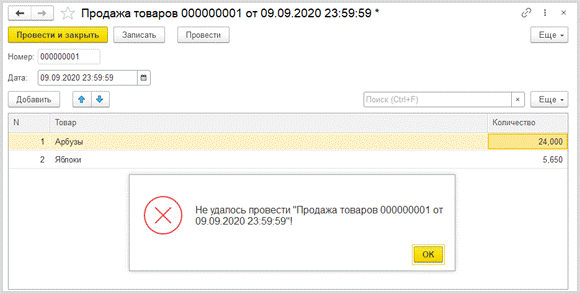
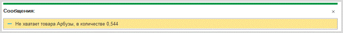
Как
видно из сообщения, товара не хватает ровно в том количестве, которое раньше
выводилось в отчете со знаком «-» (минус).
Если
изменить количество на меньшее, то механизм будет работать корректно.
Также
отчет будет учитывать документы, проведенные в конце дня.
Поставленная задача решена.